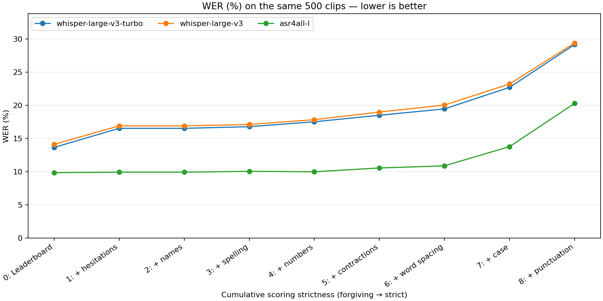
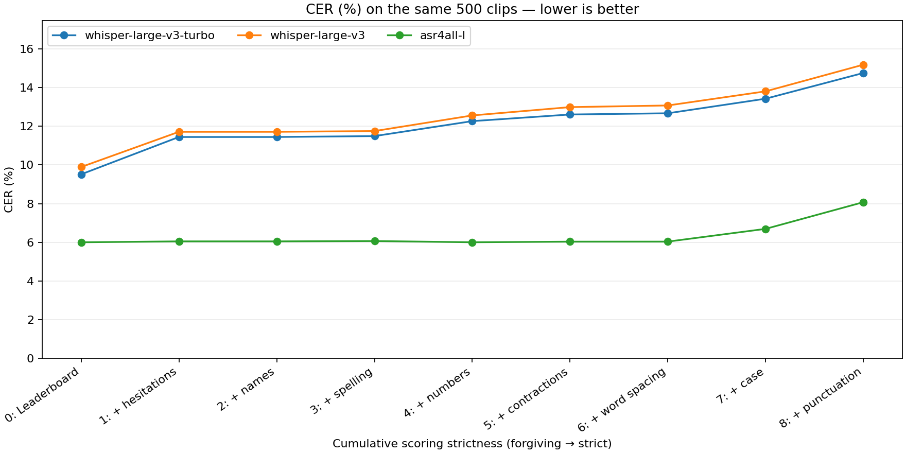
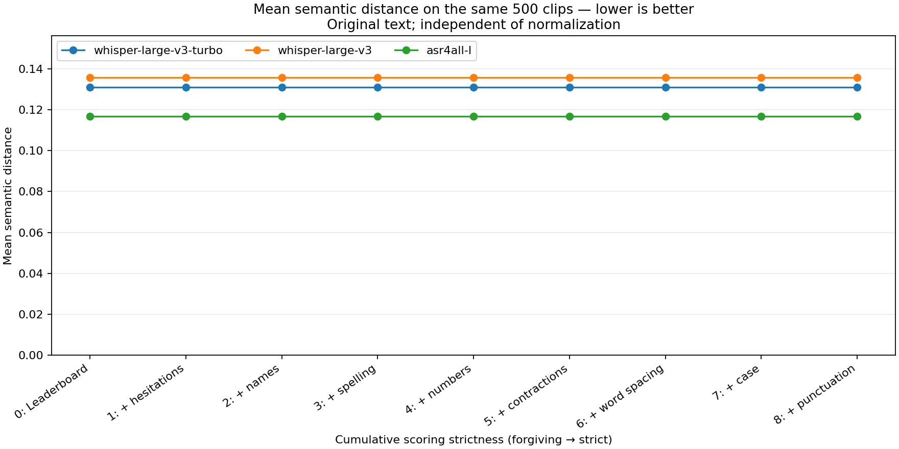

500 shared clips. Lower scores are better.
Metric disagreements · Metadata and listening review · All scores
| Model | Sample WER | CER | Semantic distance | Estimated corpus WER | Approx. 95% interval |
|---|---|---|---|---|---|
| openai/whisper-large-v3-turbo | 13.67% | 9.51% | 0.1311 | 13.66% | 12.17–15.14 |
| openai/whisper-large-v3 | 14.12% | 9.89% | 0.1358 | 14.10% | 12.58–15.64 |
| futo-org/asr4all-l | 9.87% | 6.00% | 0.1169 | 9.86% | 8.75–10.95 |
Intervals describe sampling uncertainty for the weighted fixed-corpus WER estimate. They do not cover new meetings or reference errors. Semantic distance is not a percentage or a factual-accuracy guarantee. Its flat normalization curve follows from using original text.


